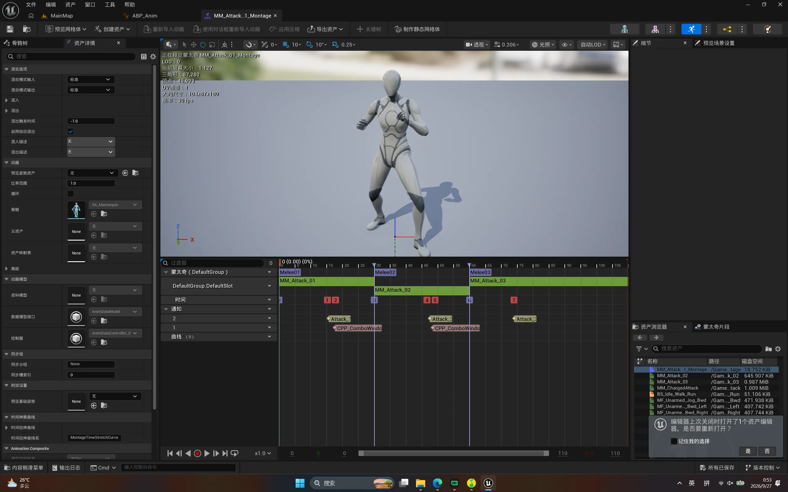
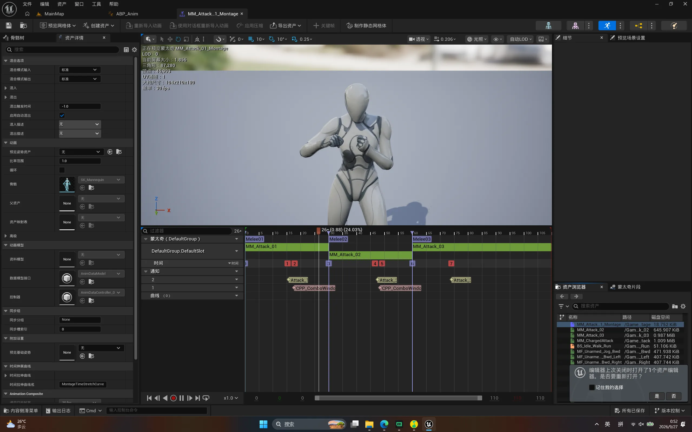
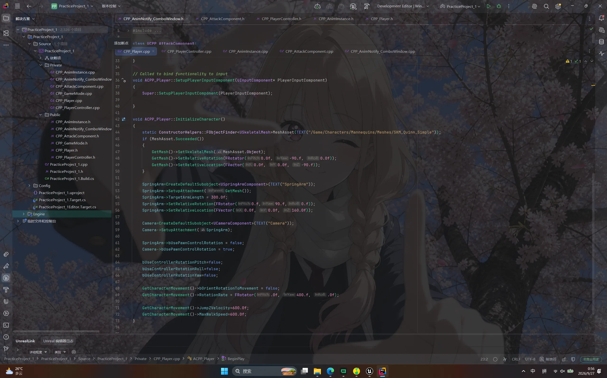
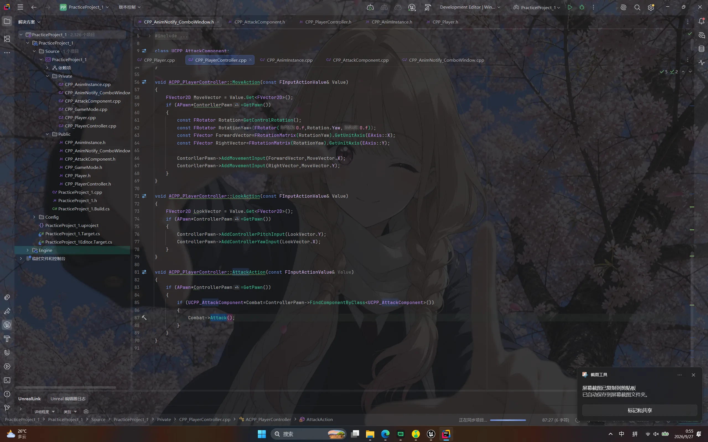
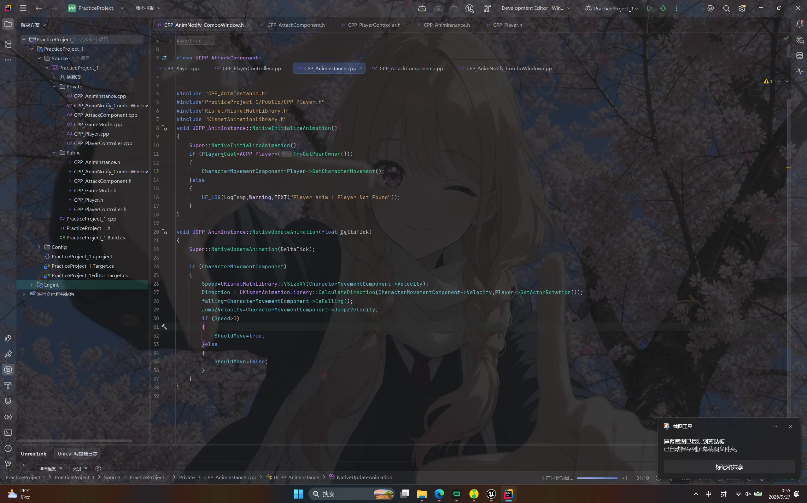
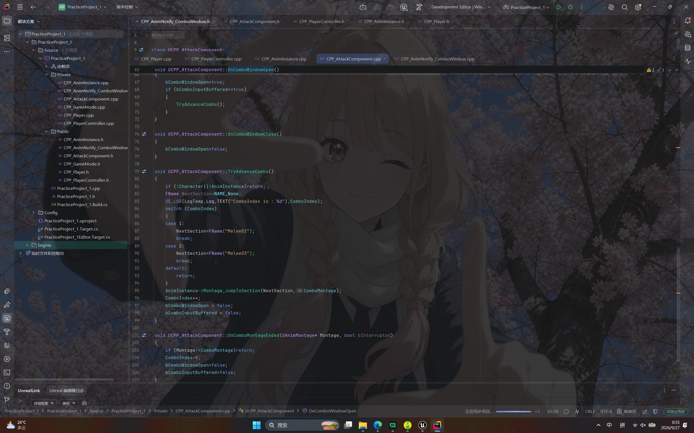
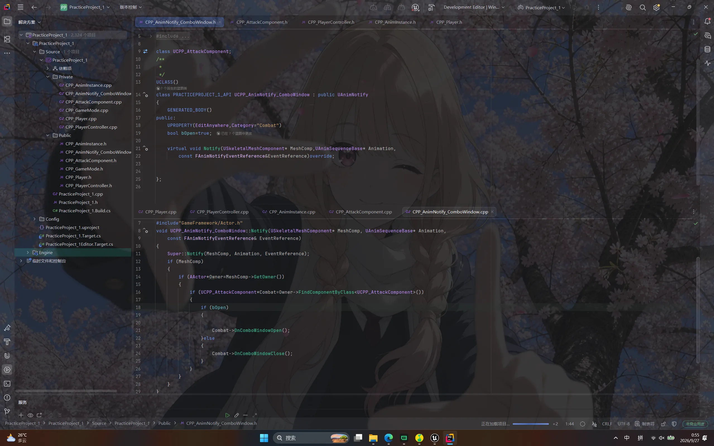

Case 06 / 08
UE 模板复刻
一次纯粹的练手：把 UE 自带的第三人称模板，用 C++ 从头再写一遍。目标不是做出一个游戏， 而是把移动、跳跃、动画和输入这几块基础的东西，从「蓝图里连过」变成「代码里写清楚」。 最后能跑起来的成果是一个基础移动跳跃，加一个很朴素的三段攻击。
概览与技术栈
做这个工程的起因挺简单：之前用引擎做东西基本都在蓝图里点，能跑起来， 但说不清底下发生了什么。所以这次把 UE 的第三人称模板拆开重做了一遍， 规定自己凡是能从 C++ 里写的，就不要用蓝图节点接。
输入这块换成了引擎现在主推的增强输入系统。输入动作和输入映射上下文这两个资产还是在编辑器里配，
但响应全部落在 C++ 的回调里：一个管移动，一个管视角，一个管攻击。
移动回调把二维输入拆成前后和左右两个分量，分别喂给角色移动组件的
AddMovementInput，方向取自控制器当前的朝向，这样角色本体不用转头，
镜头转哪儿就往哪儿走。视角回调则直接改控制器的俯仰和偏航。
动画这块是本工程里我花时间最多的部分。角色的动画实例每帧从角色移动组件里读速度、 移动方向、是否离地和跳跃初速，算好之后写成变量给混合空间用——走和跑之间的过渡 不是靠切换动画，而是靠混合空间按速度在两条姿势之间插值，朝向则交给方向参数。 连击部分没有写状态机，而是用动画蒙太奇配「段通知」：一次攻击拆成 Melee01 到 Melee03 三段，段的开头和结尾各挂一个通知，通知只做一件事——告诉攻击组件「连击窗口开了」或者「关了」。
剩下的逻辑全集中在攻击组件里。窗口开着的时候按键就把这次输入记下来，等当前这一段播完， 再决定要不要跳到下一段。这样攻击的节奏其实是由动画剪辑的长度决定的， 改手感只需要重新切动画，不用动代码。
技术栈
- 引擎
- Unreal Engine 5.7
- 语言
- C++：五组类分工，玩家、控制器、动画实例、攻击组件、动画通知
- 输入
- 增强输入系统：输入动作与映射上下文资产 + C++ 回调绑定
- 移动
- 角色移动组件，速度、跳跃初速、旋转策略统一在角色构造函数里定
- 动画
- 混合空间做走跑与朝向，动画蒙太奇做攻击，靠段通知驱动连击窗口
- 角色资产
- 引擎自带的 Quinn 骨骼网格与官方动画序列，没有自制美术资源
几个类的职责
拆得比较细，是因为我想让每个文件都短到能一眼看完：
- Player
- 构造函数里装配：加载骨骼网格、挂弹簧臂与相机、设置移动参数；输入绑定也在这里
- PlayerController
- 把增强输入回调翻译成具体动作：移动、转视角、发起攻击
- AnimInstance
- 每帧把速度、方向、离地状态、跳跃初速缓存成变量，供混合空间读取
- AttackComponent
- 连击窗口的开关、输入缓冲、跳段与结束复位，连击的全部规则都在这里
- AnimNotify
- 蒙太奇上的一颗标记，只负责按段去叫攻击组件开窗或关窗
截图与演示
这个工程没有自制美术资源，所以画面好看不到哪去，能截的主要是编辑器里的样子。 前两张是动画蒙太奇的编辑界面，最后是一段实际游玩的录屏。若视频无法播放，请稍等。


技术文档
这个工程没有单独的文档文件，逻辑全在 C++ 里，所以直接贴五张源码截图， 每张说一件事。顺序是按「一帧里数据怎么流」排的：从角色装配，到输入进来， 到动画实例算参数，再到攻击组件处理连击，最后是动画通知把窗口开起来。
工程里一共五个主要类，都带 CPP_ 前缀，和引擎模板里的类区分开。
我刻意让每个文件都只做一件事：玩家类只负责装配，控制器只负责翻译输入，
动画实例只负责算变量，连击规则全部收在攻击组件里，动画通知本身几乎不写逻辑。
好处是出了问题一眼知道该翻哪个文件，坏处是文件数目变多了——
这个取舍我现在也没完全想好。

CPP_Player::InitializeCharacter：先把引擎自带的 Quinn 网格装到角色上，
转正朝向、往下挪一点让脚底贴住胶囊体，再挂弹簧臂和相机。
最后那一串 GetCharacterMovement() 赋值是故意集中写在一处的——
移动速度、跳跃初速、旋转策略原本散在蓝图里，全收到构造函数里之后，
改手感只需要看这一个地方。

CPP_PlayerController 里的三个增强输入回调。
移动这里我特意没有直接拿输入当速度，而是先按控制器朝向换成世界方向再喂给移动组件，
这样角色本体不转、镜头往哪转就往哪走。攻击回调只做一件事：
找到组件然后把活交给它，判断规则一概不写在控制器里。

CPP_AnimInstance 每帧做的事：把移动组件里的数据翻译成混合空间认得的四个变量。
这层缓存是必要的——混合空间只认动画实例上的参数，不给它算好，
蓝图里就得再连一遍计算节点。方向用的是速度方向和角色朝向的夹角，
所以原地转身不会触发走路动画。

CPP_AttackComponent：连击的全部规则就在这几个函数里。
TryAdvanceCombo 里那个按序号取段名的 switch 是核心——
第一段接第二段、第二段接第三段，没有下一段就直接返回，所以第三段打完自然收招。
跳段的动作由 Montage_JumpToSection 完成，
代码不关心动画播到第几帧，只关心窗口开没开。

CPP_AnimNotify_ComboWindow：整个连击系统里我最满意的一处。
它自己没有任何状态，只有一个「开还是关」的布尔开关，
挂在蒙太奇的段边界上，播到就顺手叫一下攻击组件。
这样做的好处是攻击的节奏完全交回给动画剪辑——想调手感就去挪通知的位置，
一行代码都不用改。
导航链接
练手工程，没有传到公开仓库，也没有打包发布，所以这里没有可以点的链接。 想看具体某个类怎么写，或者想直接要工程文件，都可以写信跟我说。
- 代码仓库
- 暂无公开仓库
- 打包发布
- 暂未发布
- 源码说明
- 核心逻辑见上方「技术文档」